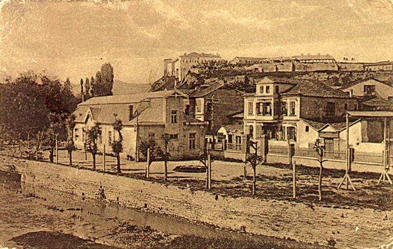
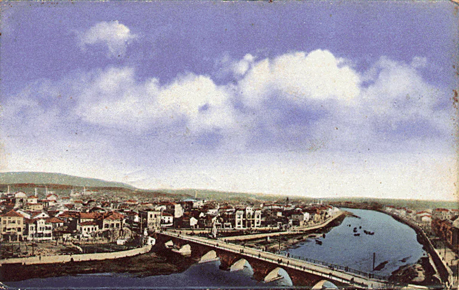

On the Vardar river
- Screenplay
- Dimitrie Osmanli, Simon Drakul
- Camera
- Kiro Bilbilovski
- Year
- 1964
- Length
- 00:16

The "13 November" quay - 1888.

A watermill on the upper Vardar - end of the 19th century.

Although this postcard is badly damaged, it was still included in this collection because it dates from the end of the 19th and beginning of the 20th century and shows some buildings found only on this postcard. On the right is the Ottoman Bank. In the foreground is the old plane tree on which Karpoš's dead body was hung in 1689. Above it rises the Skopje fortress - Kale. On the far left is part of the Stone Bridge.

View of the two quays on the Vardar - beginning of the 20th century.

Skopje in 1902 - view from the Stone Bridge towards the wooden bridge. The Vardar has quay walls. Residential and public buildings can be seen. On the right of the photograph is the Turkish theatre, and on the left, at the very beginning, the Burmali Mosque. In the background are the bank and the old post office.

View towards the little wooden bridge, the old Turkish theatre and part of the Skopje fortress - Kale. (beginning of the 20th century)

View from the right bank of the Vardar towards the Skopje fortress - Kale. (beginning of the 20th century).

View of the left bank of the Vardar (the "Dimitar Vlahov" quay) - beginning of the 20th century. The mouth of the Serava river can be seen in the quay wall.

A wooden bridge, before the Iron Bridge was built. In the background are the Stone Bridge and the Burmali Mosque. (end of the 19th century)

Beginning of the 20th century. The Ottoman Bank, the Skopje Metropolitanate and the buildings on the left bank of the Vardar, just past the Stone Bridge. In the foreground is the old plane tree.

View of the left bank of the Vardar towards the Church of St Mina (with two domes) and the Church of the Holy Mother of God (in the background, with one dome). - beginning of the 20th century.

In the foreground are the courthouse and the old school, and in the background the domes of the Church of St Mina - beginning of the 20th century.

View of the two quays from the Vardar - beginning of the 20th century.

The left bank of the Vardar - the "Dimitar Vlahov" quay with the Ottoman Bank, the Metropolitanate and the two domes of the Church of St Mina in the background. (beginning of the 20th century)

The left bank of the Vardar - the "Dimitar Vlahov" quay, between the Stone Bridge and the Iron Bridge, with residential buildings. (beginning of the 20th century)

The photograph was taken from the Stone Bridge, around 1910. On the left is the old Turkish theatre, and above it the Skopje fortress - Kale.

The left bank of the Vardar with the Jewish quarter and the Skopje fortress - Kale in the background. (1910)

The photograph was taken from the Stone Bridge, around 1910. On the left is the old Turkish theatre, and above it the Skopje fortress - Kale.

Skopje in the 1916 flood. The water reached the buildings. On the right you can see part of a building that collapsed because of the flood.

Skopje after 1918. The two quays of the Vardar as main routes, important for the growth of the city. In the background is the Stone Bridge with the Burmali Mosque. Many buildings line the quay, in various architectural styles close to the European school.

Skopje before the Balkan War. The quay on the right bank of the Vardar. In the background are the Burmali Mosque and the Stone Bridge. In the foreground are the Russian consulate and other buildings, with the influence of the European school of architecture: classical, academic and pseudo-classical forms.

View of the right bank of the Vardar with the bank and the old post office, which stood between the Stone Bridge and the little wooden bridge - early 1920s.

View towards the left bank of the Vardar. In the foreground are the courthouse and the old school, and in the background the domes of the Church of St Mina. To its right is the Church of the Holy Mother of God. - the 1920s.

View of the right bank of the Vardar with the bank and the old post office, which stood between the Stone Bridge and the little wooden bridge - early 1920s.

The right bank of the Vardar in front of the Stone Bridge. On the left are the bank and the old post office. On the right of the postcard is the little wooden bridge - around 1920.

View of the right bank of the Vardar with the bank and the old post office, which stood between the Stone Bridge and the little wooden bridge - early 1920s.

Part of the left bank of the Vardar - roughly where the Macedonian Radio and Television building stands today. The minaret of the Vardar Tekke Mosque (built in the early 16th century) can be seen - early 1920s.

Part of the left bank of the Vardar - roughly where the Macedonian Radio and Television building stands today. The minaret of the Vardar Tekke Mosque (built in the early 16th century) can be seen - early 1920s.

View of the right bank of the Vardar in front of the Stone Bridge. The middle quay area. On the left are the bank and the old post office. On the right of the postcard is the little wooden bridge - around 1920.

Skopje - part of the square. On the left is part of the Stone Bridge, and on the right the site before the National Bank was built. The quay is laid out as a street for traffic. In the background on the right is the boys' gymnasium.

Skopje - part of the square. On the left is part of the Stone Bridge, and on the right the site before the National Bank was built. The quay is laid out as a street for traffic. In the background on the right is the boys' gymnasium. - the 1930s

The "Dimitar Vlahov" quay - left bank of the Vardar. - early 1920s

View from the Stone Bridge towards the monument to the fallen fighters and the Ottoman Bank. - the 1920s.

Panoramic picture of Skopje: the left quay of the Vardar with part of the Jewish quarter, the Pajko quarter and the Stone Bridge. - the 1920s

View of Skopje from the Officers' Club towards the Jewish quarter. - the 1920s.

View of the right bank of the Vardar with residential buildings. In the background are the Stone Bridge and the Officers' Club under construction. (around 1925)

Skopje, the 1930s. View of the two quays. In the foreground are the old school and the courthouse, and right behind them the two bell towers of the Church of St Mina. In the background is the Officers' Club, before the National Bank was built. Photographed from the Iron Bridge.

The quay on the right bank of the Vardar in front of the Stone Bridge. In the foreground is a residential building with shops on the ground floor and the entrances to the "Aroesti" arcade, built in the 1920s, a small shopping centre with crafts and trading shops. (Many people died here in the catastrophic earthquake of 1963.) In the background are the agricultural bank, the Officers' Club, the National Bank and the Stone Bridge. (the 1930s)

The "13 November" quay with residential buildings, part of the Stone Bridge and the Officers' Club - the 1920s.

View towards the "13 November" quay on the right bank of the Vardar, the Stone Bridge and the Officers' Club - photographed around 1927.

Part of the square in front of the Stone Bridge and both banks of the Vardar. In the background on the left are the Church of St Mina with two domes and, a little further left, the Church of the Holy Mother of God. The quay is landscaped with electric lighting and greenery. (1925-1930)

The right bank of the Vardar, from the little wooden bridge towards the park - the 1930s.

The "13 November" quay. View towards the Stone Bridge and the Officers' Club - end of the 1930s.

The quay on the left bank of the Vardar in front of the Stone Bridge, with houses of the Jewish quarter. In the background is the Ottoman Bank - around 1930.

View from the Stone Bridge on the Vardar towards the little wooden bridge and both banks of the river. On the right is the National Theatre, on the left the bank and the old post office. - the 1930s

View of the "Bunjakovec" neighbourhood. The bed of the Vardar is protected by earth embankments. - the 1930s

The left and right banks of the Vardar, photographed from the Stone Bridge. The middle quay area on both sides of the Vardar. - around 1930

The right bank of the Vardar. The "13 November" quay. - around 1930

Skopje, the 1930s. View from the Iron Bridge on the Vardar of the two quays, lined with residential and public buildings. In the foreground on the right are the old school, the courthouse and the two bell towers of the Church of St Mina. In the background are the Officers' Club and the National Bank.

View towards the "13 November" quay on the right bank of the Vardar, the Stone Bridge and the Officers' Club - photographed around 1930.

View of the two quays on the Vardar and the Iron Bridge. - the 1950s

View of the two quays on the Vardar and the Concrete Bridge. - the 1950s.

The right bank of the Vardar past the Stone Bridge, photographed before the catastrophic earthquake of 26 July 1963. In the background are the Officers' Club and the National Bank.

The quay on the right bank of the Vardar. The business and residential complex "Towers on the Vardar" (architect Aleksandar Serafimovski). The photograph was taken in the 1960s, before the catastrophic earthquake of 26 July 1963.

The right bank of the Vardar with the Stone Bridge, the towers along the Vardar and the grand hotel "Skopje", photographed right after the catastrophic earthquake of 26 July 1963, before the Vardar was regulated. The regulation was carried out in 1965-1968.

View towards the right bank of the Vardar. The arch in the foreground is part of the Stone Bridge; photographed in the 1950s.

View from the left bank of the Vardar towards the Stone Bridge. In the background are the Vardar Towers. - the 1970s

View of today's central post office - the Telecommunications Centre (built 1974-1980, architect Janko Konstantinov) and the quay in front of it.

 Aqueduct4 postcards
Aqueduct4 postcards Kale30 postcards
Kale30 postcards Bridges60 postcards
Bridges60 postcards Quay58 postcards
Quay58 postcards Square46 postcards
Square46 postcards Buildings66 postcards
Buildings66 postcards Christian churches19 postcards
Christian churches19 postcards Muslim buildings33 postcards
Muslim buildings33 postcards Officers' Club29 postcards
Officers' Club29 postcards Theatre28 postcards
Theatre28 postcards Railway station13 postcards
Railway station13 postcards Schools36 postcards
Schools36 postcards Parks12 postcards
Parks12 postcards Markets18 postcards
Markets18 postcards Streets38 postcards
Streets38 postcards Panorama I60 postcards
Panorama I60 postcards Panorama II30 postcards
Panorama II30 postcards Collages55 postcards
Collages55 postcards Floods9 postcards
Floods9 postcards Earthquake27 postcards
Earthquake27 postcards Skopje 200026 postcards
Skopje 200026 postcards